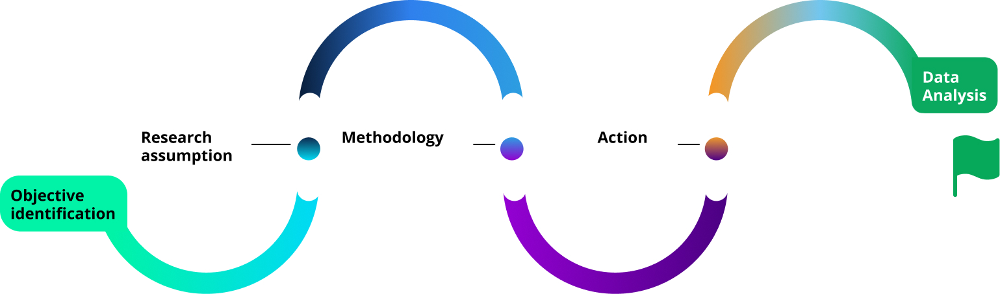

Home
EV EVER
Your trusted navigator for electric vehicles for long distance travel experience which guides you on shared charging and stay location.
CLIENT - UC BERKELEY
OVERVIEW
This project started while speaking to one of my family friends and her experience driving her electric vechile with her family on stormy snowy day during christmas long vacation from the Bay area to LA. She mentioned it was a nightmare because she was not able to locate a hotel or charging station because of a blackout in the area (Snowstorm in LA is rare). Most of the charging stations were closed and hotels were full.
Problem statement
As the electric transformation in the mobility space is accelerating at a fast pace, Certain segments of EV drivers who like long multi-stop commute, there is a need for providing confidence from range anxiety and enhanced en route experience like overnight stay with EV charging facilities and also live enroute charging stops guidance.
Solution
EV EVER (EV meaning electric vehicle, “EVER” meaning driving EV efficiently with least worries) is a travel app that will help EV owners to drive long distance commutes by locating shared charging and stay location.
My Role
UX Designer
Tool Used
Figma
Photoshop
Illustrator
Post it app
Google Forms
Quicktime
recording
Research & findings
Why a robust Research Plan is important in the beginning of the project?
Research plan is a way to start conversation with users in a systematic and in interesting direction and taking note of comments and valuable insights. I started the research plan with identifying research objectives and statement. Overall this research plan is basically a document that outlines the where, why, who, how and what of the project. The methodology I followed during my 1:1 user interview was “5 Whys”.

Mike chad, 32
This is a wider card with supporting text below as a natural lead-in to additional content. This content is a little bit longer. This is a wider card with supporting text below as a natural lead-in to additional content. This content is a little bit longer.
Rommilla, 48
This is a wider card with supporting text below as a natural lead-in to additional content. This content is a little bit longer.
In-person user interview
In-person user interview is key to get user insight. I conducted a few user interviews with both EV owners and prospective buyers at the showroom and online surveys. The goal was to understand each individual user's needs and to get the most specific requirements and their expectations.
Recruited participant
The participants we interviewed were mainly current EV owners from Tesla and other OEMs who frequently use their vehicles for both longer multi-stop commutes. We will also be interviewing a few prospective owners as well. These prospective buyers will help us to understand their aspirations connected to owning EV.
Here what i learned from my Online user survey
UX surveys are the easiest and quick way to find data from potential users. This user survey was the part of the qualitative study with both closed and open questions. After user interview, I also conducted online survey dividing survey in two broader category. First is EVs are the driving factor or long distance drive? and second, how user want their EVs to be charged.
The most important take way was to have more and more charging station and it absolutely doesn't mater if it is free or paid or community based. One of the best things I found during the UX survey was the diverse range of responses. I received a total 34 responses. Few things which came loud and clear are
- Users plan their route based on availability of charging stations which I find a limiting factor for road trips.
- Almost ~ 65% of users want a charging station at their stay location during travel
- Free charging stations are desirable.
- Google map is most accepted travel app!
Ideation
I used Affinity mapping to organize data and ideas
I find Affinity mapping is a great way to organize information into groups (Key similarities) of similar items to then further analyze the data. I personally have given chunking of the data as blocking data which falls under a similar situation. The way I started here is with a braindump from an interview and survey with user insights and pain points.
Key similarities
Think & feel, See, fear, and say & do of Empathy Mapping
Next step followed is empathy mapping to represent emthatehic dimension of multiple users. I find this one pager as helpful to socialize and discuss user research with UX colleagues. The important findings that will impact the future persona comes with pain-points and gain that I find collectively in empathy mapping.
Pain
- Mileage Anxiety, Unavailability of charging stations, unexpected expenses
- AWeather condition, matching hotel/ shared services as shown on the website/ app.
- Engaging family during driving hours.
- Healthy food/meal during the trip.
Gain
- Driving via EV means saving on gas and frequent stops for gas.
- Expected to have a nicer hotel/ shared accomodation assuming to have the free charging facility.
- Bonding time with family and friends.
- Excited for the trip and break from regular work.
Persona
Next step followed is empathy mapping to represent emthatehic dimension of multiple users. I find this one pager as helpful to socialize and discuss user research with UX colleagues. The important findings that will impact the future persona comes with pain-points and gain that I find collectively in empathy mapping.
Prototyping
Wireframe sketch
In this phase I started to tend to layout the products in order to communicate what items should be on the page based on user needs. Here Emphasis is on usability over aesthetics and application structure.
Guerrilla Usability testing plan
I planned user testing using the wireframe to hear the user's reaction and feedback on
navigation usability and products features. This also made me understand where we match and stand with the
user's expectations. Method I used here is Guerrilla usability testing which involves rapid testing without
recruiting users in advamce.
I approached members in the parking lot and supermarket to get real
world actionable feedback.
Interestingly we also get perspective and opinion on visual design, layout and color themes. I made notes of
all the insights, action and expectation in order to iterate the design for the next phase.
Iterate User flow
Based on all improvements the final design is the combination of the best option for the user with incorporating clarity and freindliness while using the product. I put a lot more focus on creating an enhanced user onboarding experience.
Hi fidelity iOS wireframe
Based on task flow and user flow analysis, then further refining initial ideas. I created Lofi wireframes with the best option to cater to user needs. I created a prototype in figma for user testing. This initial prototype allowed us to test the navigation and usability in real life scenarios with users. This also helps us to build the understanding of our design language and how components and layouts should look and flow while the user is navigating through the product.
Check out the final interactive prototype here .
Conclusion & future
oppertuinities
Key learnings
The importance of user testing– Importantly I feel conducting usability testing with real users
at various stages helped me to identify and rectify the major pain points which I consider roadblocks.
Research methodology– The beauty of the research methodology is to help designers to build an important base
for product design. It helped me to produce important data and insights. Proper research methodology make
our effort more effective and valuable at every stage of the design process.
Identifying the right persona – I think deep understanding of the right persona is fundamental for creating
a high quality product. Persona also hep us to find the answer of most important questions.